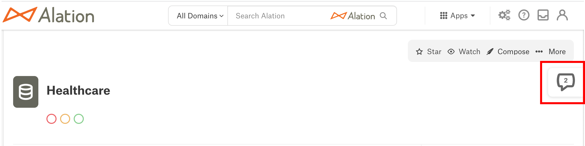

Finding Conversations¶
Alation Cloud Service Applies to Alation Cloud Service instances of Alation
Customer Managed Applies to customer-managed instances of Alation
The Conversations feature is designed to give users easy access to any Conversation. You can find Conversations from any catalog page by searching, opening the Conversations slideout, or accessing your Inbox.
Your Inbox contains only Conversations you’ve participated in. Using Your Inbox explains your Inbox’s features and how they help you keep track of your Conversations. Conversations search and the Conversations slideout allow you to discover past Conversations while browsing in the catalog. These features will be discussed below.
Conversations Search¶
Every catalog page includes Alation’s search feature and the Conversations panel in the left sidebar. You can use either one to enter search terms and access catalog Conversations from the results.
Conversations Panel¶
The Conversations panel allows you to select catalog Conversations from a list or search for a Conversation by subject. It appears in Alation’s left sidebar, along with panels for Data Sources, Articles, and other catalog objects. The screenshots below show that the Conversations panel is visible whether the left sidebar is closed or expanded.
{kind=link}
{kind=link}
To access the Conversations panel’s functionalities, click the Conversations icon in its upper-left corner. The Conversations panel will open in the left sidebar so you can view the features inside it.
{kind=link}
The Conversations panel includes a list of links to top catalog Conversations and a Filter this list box. By default, the list displays the most recently opened Conversations in the catalog for easy access.
The Conversation you’re looking for may not appear in the list when you open the Conversations panel, and so you might need to use the Filter this list box to search for it. If you enter text in the Filter this list box, the list of Conversations will be populated with Conversations whose subject lines match your search terms.
You can also use the sorted by filter above the Filter this list box to help you find the Conversation you’re looking for. The sorted by filter determines how the list of Conversations is ordered. If you want the list of Conversations to be sorted alphabetically instead of by recency, click newest from the sorted by filter. Select name from the dropdown menu that appears.
If you want to sort the list by recency again, follow the same process to change the sorted by filter from name to newest. You can use the sorted by filter by itself to find your Conversation, or you can change it after entering text in the Filter this list box to reorder the resulting list of Conversations.
Note
The Filter this list box searches only a Conversation’s subject text. It will not return results based on Conversation body text or replies. To search for Conversations by subject, body text, and replies, see the Search Feature section below.
Search Feature¶
Alation’s search feature allows you to search for Conversations within the catalog by subject, body text, and replies. You can use the search feature in two different ways to find Conversations:
Enter text in the search box to search all objects in Alation, including Conversations.
Navigate to the search page to filter your results to only Conversations.
Using the Search Box¶
You can quickly search for Conversations by entering text in the search box in the top toolbar, just as you would when searching for any other catalog object. As you type, the search dialog below the search box will display the most frequently used objects in Alation that match your search terms. If a Conversation has a subject line, body text, or a reply that contains your search terms, it may appear in this list.
If the Conversation you’re looking for is included in the list, you can click its link to open it. Otherwise, you will need to use the search page’s capabilities to find your Conversation.
Filtering Results on the Search Page¶
The search page includes a full-page view of results and search filters that make it easier to find Conversations. You can access the search page from the search box.
After you finish typing your search text in the search box, navigate to the search page by clicking the See all results link at the bottom of the search dialog. You will be taken to a full-page view of your search results like the one below.
The search page lists all catalog objects that match your search by default, but you can filter your results to include only Conversations.
Click the More Types button (outlined in red in the screenshot above) to open the Object Types dropdown menu.
Scroll through the list of objects and select Conversations.
The More Types button will change to display Conversations, and your results will be filtered to include only Conversations.
Conversations Slideout¶
The Conversations slideout allows you to interact with the Conversations feature while you’re on a data object’s catalog page. You can use the slideout to find existing Conversations connected to the data object, or to start a new Conversation.
When you open a catalog object page, the Conversations slideout appears as a tab on the upper-right side of the page. The tab displays the Conversations icon and the number of Conversations inside the slideout.
Note
The Conversations slideout does not appear on Conversations, Column Values, Functions, Users, and Groups pages.
To open the Conversations slideout, click the slideout tab. The slideout will expand from the right so you can access its functionalities.

Post a New Conversation¶
Every Conversations slideout includes a + Conversation button in its upper-right corner that you can use to create a new Conversation. If you post a new Conversation from the slideout, it will appear in the slideout’s Started Here area.
For more information about Conversations started inside Conversations slideouts and instructions on posting a Conversation, see Posting a New Conversation.
Started Here and Mentioning This¶
Most of the space inside the Conversations slideout is devoted to the Started Here and Mentioning This areas. The Started Here area contains a list of Conversations that refer to the catalog page the slideout’s on. Conversations that @-mention the catalog page are displayed in the Mentioning This area.
You can change the Conversations displayed in the Started Here and Mentioning This areas with the Status filter above the Started Here area. By default, the filter is set to Any. To view only open or resolved Conversations, click Any and select Open or Resolved from the dropdown menu that appears.
Click a Conversation to view its details. The Conversation will expand inside the Started Here or Mentioning This area so that you can see the full original post as well as other users’ replies. The expanded view allows you to interact with the Conversation by replying or making changes. You can also see the Conversation in full-page view using the three-dots ( … ) displayed in the upper right of the expanded view.
Note
If the Conversation also appears in your Inbox, there will be two additional icons in the upper right of the expanded view. You can use them to open the Conversation in your Inbox or archive it.
Next¶
For more information about the role Conversations play in Alation, head back to Conversations. You may also be interested in these topics: